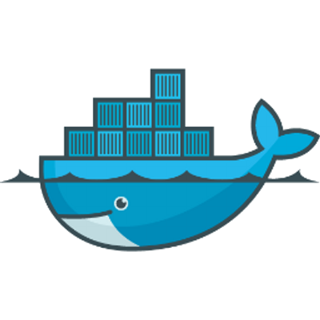
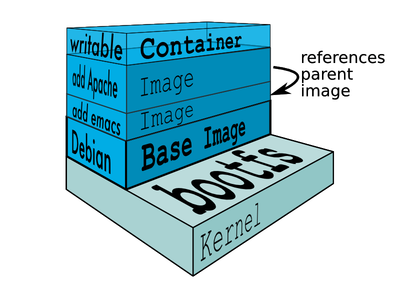

Pragmatic Docker
A 15 minutes introduction
Jens Fischer @jensfischerhh
What is Docker?

Virtualization on steroids!
- lightweight
- fast
- isolation
- predictability
- great ecosystem
Where to get it?
Linux (Ubuntu style)
$ sudo apt-get update
$ sudo apt-get install docker.io
Linux (YOLO style)
$ curl -sSL https://get.docker.com/ | sh
Mac OS X
$ brew cask install virtualbox
$ brew install docker-machine
$ brew install docker
Is it working?
$ docker run -i -t --rm hello-world
| Command |
Meaning |
docker run |
create and run a new container |
-i |
run interactive |
-t |
allocate pseudo TTY |
--rm |
remove container after exiting |
hello-world |
docker image name |
Unable to find image 'hello-world:latest' locally
Pulling repository docker.io/library/hello-world
af340544ed62: Download complete
535020c3e8ad: Download complete
Status: Downloaded newer image for hello-world:latest
Hello from Docker.
This message shows that your installation appears to be working correctly.
Important commands
| Command |
Description |
docker help |
show a list of all commands |
docker run <IMAGE> |
create and run a new container from <IMAGE> |
docker stop <CONTAINER> |
stop a running <CONTAINER> |
docker start <CONTAINER> |
restart a stopped <CONTAINER> |
docker logs <CONTAINER> |
show log output of <CONTAINER> |
docker ps |
list all running containers |
docker rm <CONTAINER> |
remove a <CONTAINER> |
docker images |
list all available images |
docker rmi <IMAGE> |
remove an <IMAGE> |
docker build <PATH> |
compile a new image named <PATH> |
Docker Lifecycle
-
edit
Dockerfile
- extend existing base image
- add desired software
- create local image
- share local image in remote repository
- download image from repository
- instantiate container from image and execute
FROM debian
RUN apt-get install -y apache2
ADD httpd.conf /etc/apache2/httpd.conf
VOLUME ["/var/www", "/var/log/apache2"]
EXPOSE 80 443
ENTRYPOINT ["/usr/sbin/apache2ctl", "-D", "FOREGROUND"]
| Command |
Description |
FROM |
extend from base image |
RUN |
execute command and store results |
ADD |
include local content |
VOLUME |
create mount points |
EXPOSE |
listen on network ports |
ENTRYPOINT |
Command for executing container |
Layered filesystem

- read-write layer on top
- read-only layer below
ADD creates a new layerADD gets cached- transfer only layer diffs
Persistent data
- persist changes in running container to new image
$ docker commit <CONTAINER>
- create named data volume container
$ docker run --name mysql-data -v /var/lib/mysql busybox true
- use named data volume container
$ docker run -d --volumes-from mysql-data -p 3306:3306 mysql
best practices
- only one process per container
- log to STDOUT
- don't fix a running container
- delete container
- fix
Dockerfile
- create new container
- minimize layers
- understand caching
- use multi-line arguments for
RUN
- don't
apt-get upgrade
Step #1: Wordpress on MySQL
- use official MySQL image
docker run \
--detach=true \
--name=db \
--env="MYSQL_ROOT_PASSWORD=root" \
--env="MYSQL_DATABASE=wordpress" \
mysql
- use official Wordpress image
docker run \
--detach=true \
--name=web \
--link db:mysql \
--publish 80:80 \
wordpress
Step #2: Turbopress customization
- use official MySQL image
- prepare
Dockerfile
- build customization
docker build \
--no-cache=true \
-t "rnd/turbopress:latest" \
.
- use local image
docker run \
--detach=true \
--name=web \
--link db:mysql \
--publish 80:80 \
rnd/turbopress
Step #3: orchestrated containers
- prepare
docker-compose.yml
- build customization
docker-compose build --no-cache
- run orchestrated containers
docker-compose up -d
Step #4: switch to MariaDB
- prepare
docker-compose.yml
- build customization
docker-compose build --no-cache
- run orchestrated containers
docker-compose up -d
- prepare
manage.yml
- backup/restore data
docker-compose -f manage.yml run --rm backup
docker-compose -f manage.yml run --rm restore
Step #5: load-balance scaled containers
- prepare
docker-compose.yml
- build customization
docker-compose build --no-cache
- run single web container
docker-compose up -d web
- scale web container
docker-compose scale web=10
- run load-balancer
docker-compose up -d lb
Step #6: cache load-balanced responses
- prepare
docker-compose.yml
- build customization
docker-compose build --no-cache
- run single web container
docker-compose up -d web
- scale web container
docker-compose scale web=10
- run cache in front of load-balancer
docker-compose up -d cache